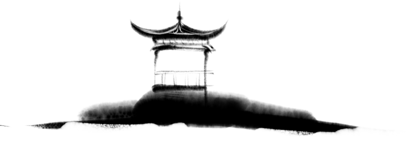
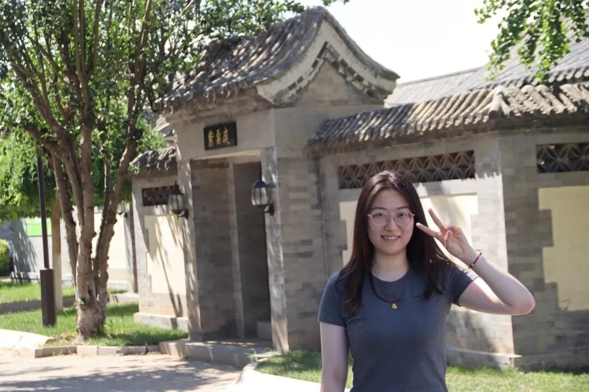
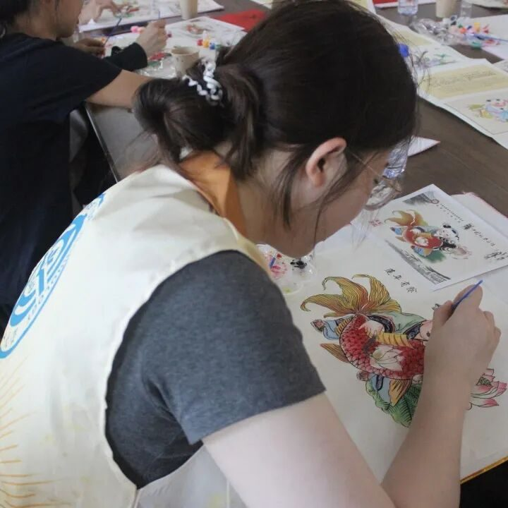
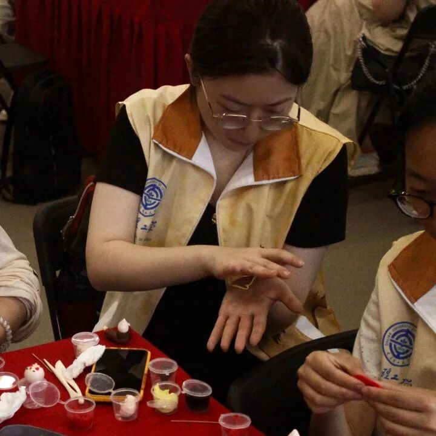
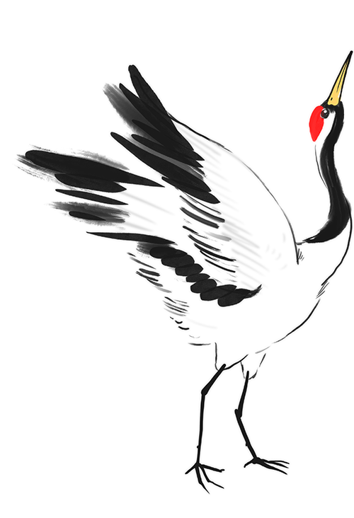
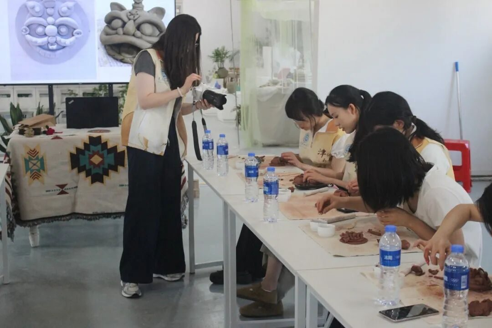
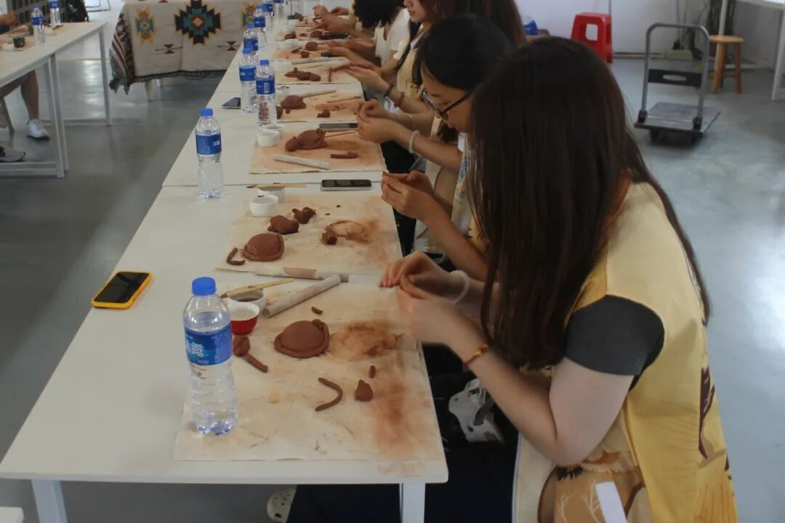
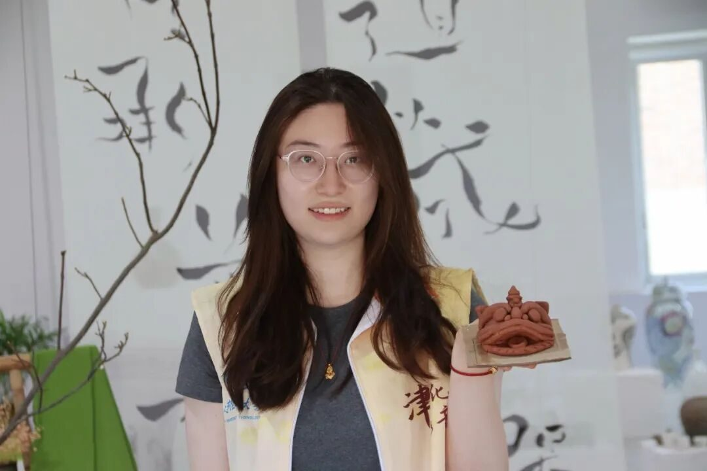

几日的天津实践虽短，却是一场深刻而真切的文化浸润之旅。作为行者无疆实践团的一员，我们穿梭于博物馆与街巷之间，从历史的深处一路走来，目之所及皆是非遗的温度与城市的灵魂。天津博物馆里，一件件静默的文物诉说着千年的风云变幻，石碑、陶瓷、古卷间，我们窥见这片土地曾经的辉煌与厚重。走进王氏泥塑工作坊，在传承人耐心指导下，我们用指尖塑形，将一团泥巴变为憨态可掬的喜狮，体会到“手艺”与“心意”的同频共振。



在街头采访的过程中，我们与本地居民交谈非遗印象，那些朴素的言语中饱含着对传统的敬意与情感，也让我们更加意识到非遗并非高高在上的文化遗产，而是融入生活、贴近人心的日常温度。随后，我们走进杨柳青，亲自拓印一幅幅年画，那饱含年味与寓意的图案不仅带来视觉的惊喜，更是一份流淌在血脉中的节庆记忆。民俗博物馆里的展陈把天津人的生活方式铺陈开来，从饮食到节庆，从婚俗到服饰，一点一滴皆有讲究。


面塑体验中，我们学习用小巧的工具雕琢出栩栩如生的人物与动物，每一次推捏，都是对技艺与审美的考验；在葫芦烙画的过程中，火针走笔，烟痕为墨，我们屏息凝神，只为在烫痕中留住一笔温情；而风筝魏的工坊更是令人难忘，从扎骨、裱糊、上色，到最终放飞，承载着手艺人心血的风筝冲上云霄，也将我们的敬意一同送向高空。
天津，这座城的魅力并不在于宏大的叙事，而在于那些藏在细节里的精致和诚意。它的非遗文化不是静止在展柜里的历史遗产，而是一代代人在烟火人间中传承的生活智慧和精神根基。

当这趟实践之旅走向尾声，内心却愈发笃定：文化的延续，从来不是一蹴而就的盛举，而是一次次走访、一次次体验、一次次讲述的累积。我们愿做这样一群行走的青年，将祖国非遗的光辉从纸上带入现实、从课堂走向大众，脚下的路还很长，但我们从未止步。非遗在路上，我们也在路上。
行者无疆
来源 | 行者无疆实践团
图片 | 行者无疆实践团
文字 | 唐子涵
编辑 | 刘辰锡
审核 | 张瑶琪 李凌志 杩健辉
责编 | 邹靓靓 周 亮